Myoko - Dekbedovertrek - Satijn - Zand
Vanaf € 69,95
Bedden
Liever eerst liggen?
Het uitkiezen van een bed kan al snel enkele uren duren. Plan je bezoek, dan maken we tijd voor je. De koffie staat klaar.
Ma, di, do, vr en za van 10u00 tot 18u00
Steenweg 49, 3870 Heers

Textiel

Showroom
In Heers
Steenweg 49, 3870 Heers
Via de E40, afrit Waremme. We liggen aan de N3, de verbindingsweg tussen Luik en Sint-Truiden.
Ma, di, do, vr en za van 10u00 tot 18u00
Woensdag gesloten, zondag op afspraak

Bedden
Textiel
Merken
1 van 14
Van Kayori, uit onze afdeling dekbedovertrekken.
Vanaf € 79,95
Prijzen incl. btw
Gratis afhalen in de winkel aan de Steenweg 49a in Heers, klaar vanaf 24 uur na je bestelling. Levering in België is gratis vanaf € 70 incl. btw, anders minimaal € 7,95. Vanaf 30 kg per zending treffen we een aparte regeling. Terugsturen kan binnen 14 kalenderdagen in de originele, ongeopende en onbeschadigde verpakking. Lees Verzenden en Retourneren.
Vanaf € 69,95


Vanaf € 79,95
8 kleuren


Vanaf € 79,95
3 kleuren


Vanaf € 79,95
3 kleuren


€ 85 was € 119,95


Vanaf € 89,95


Vanaf € 89,95


Vanaf € 99,95
4 kleuren


Vanaf € 99,95
6 kleuren


Vanaf € 99,95


€ 105 was € 139,95
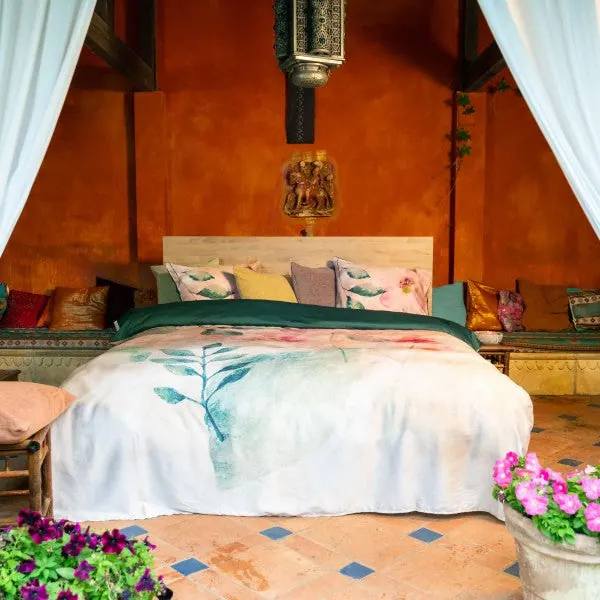
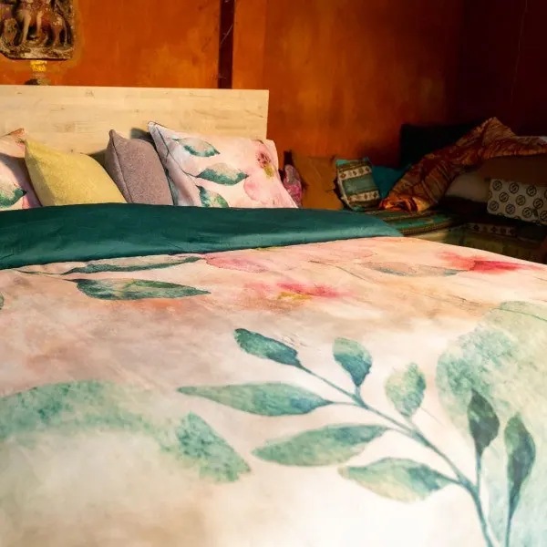
€ 115 was € 149,95
Vanaf € 89,95
Vanaf € 99,95
4 kleuren
Vanaf € 99,95
6 kleuren
Vanaf € 99,95
€ 105 was € 139,95
€ 115 was € 149,95
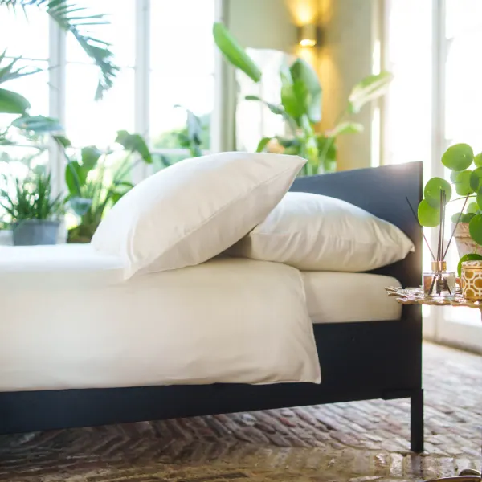
Vanaf € 129,95
5 kleuren
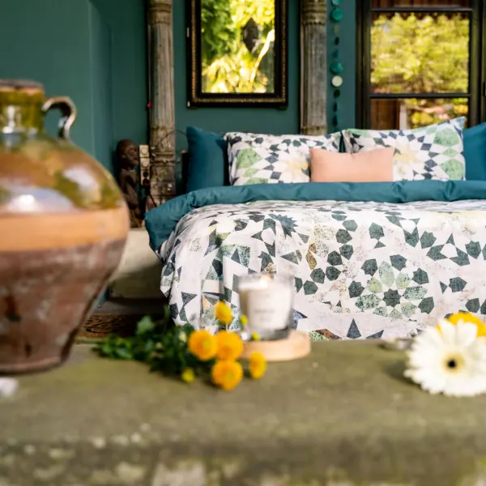
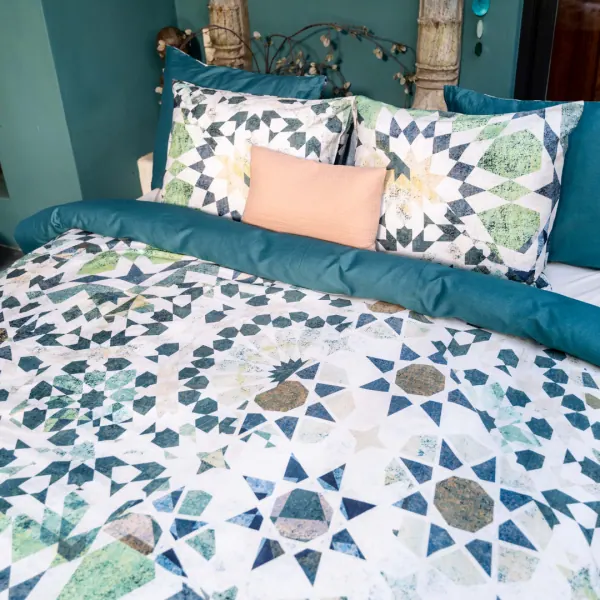
€ 135 was € 169,95
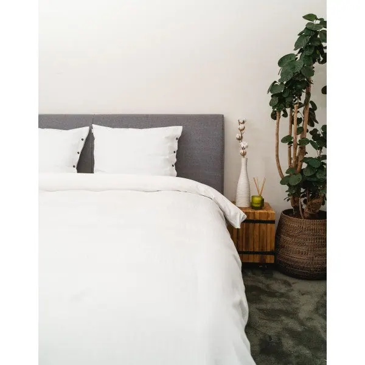
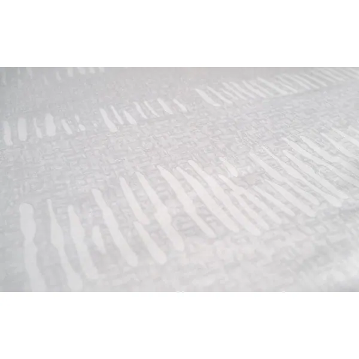
€ 169 was € 209,95
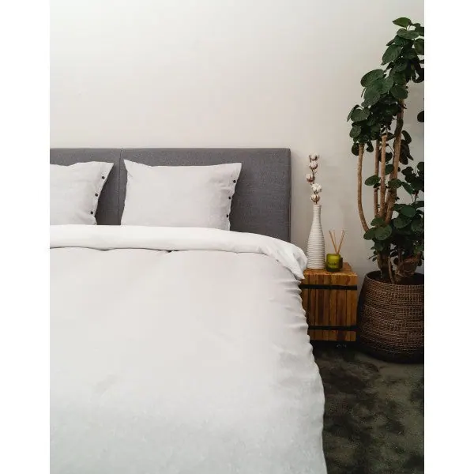
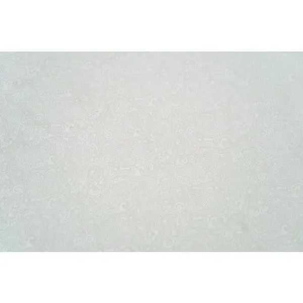
€ 169 was € 209,95
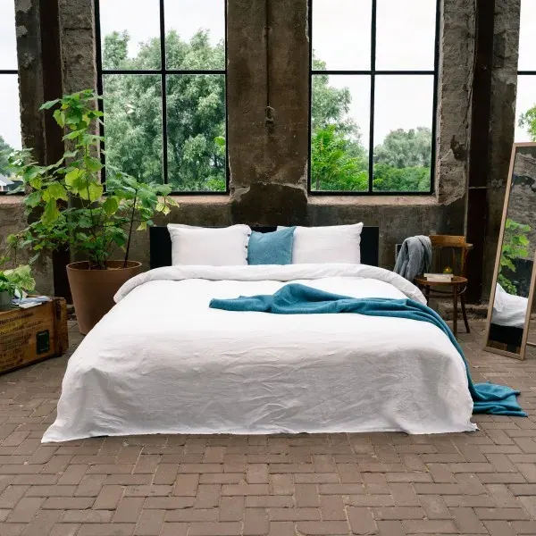
Vanaf € 190 was € 239,95
2 kleuren
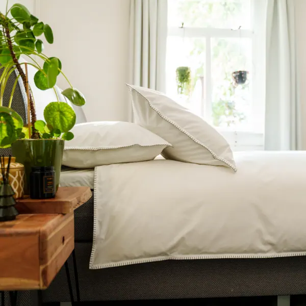
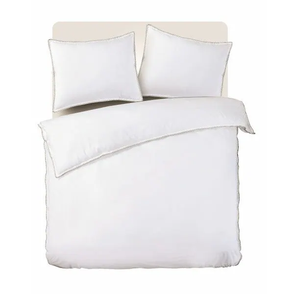
€ 199,95